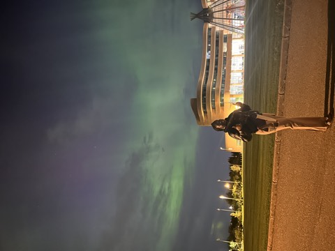
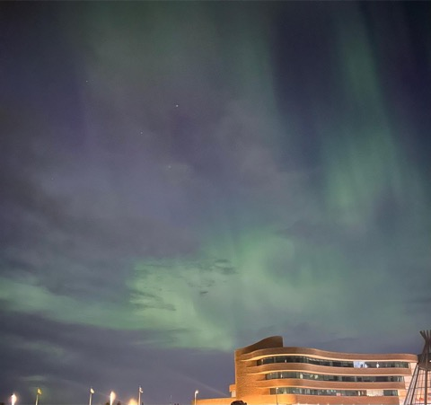

Équité, Diversité et Inclusion
dans les systèmes de recommandation socialeEquity, Diversity and Inclusion
in social recommender systems
Ce tableau de bord présente une méthode originale basée sur le coarsening de graphe pour améliorer simultanément l'équité (ΔE), la diversité (ILD) et l'inclusion dans les listes de recommandation — validée sur 4 corpus distincts (5 jeux de données au total, MovieLens étant testé à deux échelles).This dashboard presents an original method based on graph coarsening to simultaneously improve equity (ΔE), diversity (ILD) and inclusion in recommendation lists — validated on 4 distinct corpora (5 datasets in total, MovieLens being tested at two scales).
Les règles d'agrégation classiques — Borda, Condorcet, Average Score — n'ont aucun mécanisme pour éviter de favoriser les groupes majoritaires, d'homogénéiser les listes ou de sous-représenter les minorités. Ce travail propose une alternative : un coarsening de graphe sous contraintes EDI qui intègre l'équité directement dans la structure, plutôt que de la corriger après coup.Classical aggregation rules — Borda, Condorcet, Average Score — have no mechanism to avoid favoring majority groups, homogenizing lists, or under-representing minorities. This work proposes an alternative: an EDI-constrained graph coarsening that embeds equity directly into the structure, rather than correcting it after the fact.
Notre méthode améliore simultanément les 4 métriques EDI (ΔE ↓, ILD ↑, inc_F ↑, inc_M ↑) par rapport à Borda et Condorcet — sur MovieLens 100k à k=20 (Weighted Borda y parvient aussi en repondérant explicitement ses scores par la taille des groupes ; AURORA l'obtient sans reformuler la règle de vote, par contrainte structurelle pendant la fusion du graphe). Sur Rate My Professors, elle atteint ILD = 0.808 contre 0.145 pour Borda — soit environ 5,6× plus de diversité, avec la meilleure représentation (frac_F=0.60). Sur libimseti.cz, aucune amélioration : les patterns de notation diffèrent significativement selon la paire de genres (notateur, noté), une limite structurelle documentée dans l'onglet libimseti.cz (ΔE > 1.0 pour les méthodes de vote — Borda, Weighted Borda, Condorcet — ainsi que pour AURORA ; Average Score et Fair Re-rank y échappent en ne créant aucune différenciation par groupe). Sur OpenAlex, elle obtient le meilleur ΔE = 0.051 — seule méthode à réduire le biais de genre académique tout en maintenant la diversité.Our method simultaneously improves all 4 EDI metrics (ΔE ↓, ILD ↑, inc_F ↑, inc_M ↑) over Borda and Condorcet — on MovieLens 100k at k=20 (Weighted Borda also achieves this by explicitly reweighting its scores by group size; AURORA gets there without reformulating the voting rule, through a structural constraint during graph merging). On Rate My Professors, it reaches ILD = 0.808 versus 0.145 for Borda — roughly 5.6× more diversity, with the best representation (frac_F=0.60). On libimseti.cz, no improvement: rating patterns differ significantly by gender pair (rater, rated), a structural limitation documented in the libimseti.cz tab (ΔE > 1.0 for the voting methods — Borda, Weighted Borda, Condorcet — as well as for AURORA; Average Score and Fair Re-rank escape this only because they create no group differentiation at all). On OpenAlex, it achieves the best ΔE = 0.051 — the only method that reduces academic gender bias while maintaining diversity.
Pipeline vérifié bout-en-bout sur les 5 datasets. Code source : Pipeline verified end-to-end on all 5 datasets. Source code: github.com/sitaacisse-boop/EDI.
MovieLens 100k est inclus dans data/. Les jeux ML-1M, libimseti et RMP (volumineux) sont exclus du dépôt (.gitignore) — voir le README pour leurs sources. Les résultats de chaque run alimentent directement les JSON affichés dans ce dashboard.MovieLens 100k is included in data/. The ML-1M, libimseti, and RMP datasets (large) are excluded from the repo (.gitignore) — see the README for their sources. Each run's results directly feed the JSON files displayed in this dashboard.
Users : 943 (100k) · 6 040 (1M)
Items : 1 682 · 3 706 filmsmovies
Ratings : 100k · 1M notesratings (1–5)
ÉquitéEquity : Genre des notateurs (F/M)Gender of raters (F/M)
α_F : 29% (100k) · 28% (1M)
Users : 1 000 (500F / 500M)
Items : 32 677 profils (avec genre)profiles (with gender)
Ratings : 97 707 notesratings (1–10)
ÉquitéEquity : Genre des rateurs (F/M)Gender of raters (F/M)
θ : 7.0 (80% sur l'échelle 1–1080% on the 1–10 scale)
Users : 1 981 cours (ex. ENG101)courses (e.g. ENG101)
Items : 59 066 professeursprofessors
Ratings : 150 800 notesratings (1–5)
ÉquitéEquity : Genre des profs recommandésGender of recommended professors
α_F : 51% des profs51% of professors
Users : ~99 venues (NeurIPS, ICML)
Items : ~900 auteursauthors AI/ML/CS
Ratings : ~2 100 associationsco-authorships (2018–2023)
ÉquitéEquity : Genre des auteurs recommandésGender of recommended authors
α_F : 19% des auteurs (genre connu)19% of authors (known gender)
* libimseti : 500F/500M par construction (échantillonnage stratifié). OpenAlex : genre estimé par prénom (Genderize.io), 19% F car l'AI/ML reste très masculin.* libimseti: 500F/500M by construction (stratified sampling). OpenAlex: gender estimated from first name (Genderize.io), 19% F because AI/ML remains heavily male-dominated.
MovieLens valide la méthode sur un cas classique (user-side, notes 1–5). libimseti teste la robustesse avec un fort biais de genre (ΔE > 1 pour Borda). Rate My Professors introduit l'item-side equity — le genre des items recommandés. OpenAlex applique ce même cadre au domaine académique, où le biais de genre dans les citations est un problème connu. Cette diversité de domaines montre que le coarsening de graphe est une approche généraliste.MovieLens validates the method on a classic case (user-side, 1–5 ratings). libimseti tests robustness under a strong gender bias (ΔE > 1 for Borda). Rate My Professors introduces item-side equity — the gender of the recommended items. OpenAlex applies this same framework to the academic domain, where citation gender bias is a known problem. This diversity of domains shows that graph coarsening is a generalist approach.
| Corpus | DomaineDomain | Biais mesuré côtéBias measured on the | Intensité du biaisBias intensity |
|---|---|---|---|
| MovieLens 100k / 1M | FilmsMovies | UtilisateurUser | ModéréeModerate |
| libimseti.cz | RencontresDating | Utilisateur (des deux côtés)User (both sides) | Modérée à élevéeModerate to high |
| Rate My Professors | ÉducationEducation | Item | ModéréeModerate |
| OpenAlex | Recherche académiqueAcademic research | Item | Extrême (19% F)Extreme (19% F) |
Ensemble, les 4 corpus couvrent la diagonale complète : domaine, côté du graphe où le biais se loge, et sévérité du déséquilibre — de quoi vérifier qu'AURORA généralise plutôt que de sur-performer sur un seul cas favorable.Together, the 4 corpora cover the full diagonal: domain, the side of the graph where the bias sits, and the severity of the imbalance — enough to verify that AURORA generalizes rather than over-performing on a single favorable case.
MovieLens — la comparabilitéMovieLens — comparability
Le benchmark standard du domaine RecSys : n'importe quel relecteur peut confronter ces résultats à des dizaines d'autres papiers publiés. Les deux échelles (943 et 6 040 utilisateurs) répondent par avance à la question systématique « et à l'échelle, ça tient ? ».The standard benchmark of the RecSys field: any reviewer can compare these results against dozens of other published papers. The two scales (943 and 6,040 users) pre-emptively answer the systematic question "does it hold at scale?".
libimseti.cz — l'honnêteté qui rend le papier crédiblelibimseti.cz — the honesty that makes the paper credible
Un papier où la méthode gagne partout est suspect. En montrant un cas où AURORA n'améliore rien — et en l'expliquant par la théorie (Yao & Huang, 2017, sur les limites de la parité démographique) — cette faiblesse assumée devient une preuve de rigueur plutôt qu'un angle mort.A paper where the method wins everywhere is suspicious. By showing a case where AURORA improves nothing — and explaining it through theory (Yao & Huang, 2017, on the limits of demographic parity) — this acknowledged weakness becomes proof of rigor rather than a blind spot.
Rate My Professors — l'élargissement de la portéeRate My Professors — broadening the scope
Premier test de l'item-side equity : la méthode ne se limite pas à corriger un biais côté utilisateur, elle généralise à l'autre grande famille de biais. Le résultat (5,6× plus de diversité que Borda) est aussi le plus spectaculaire du lot.First test of item-side equity: the method isn't limited to correcting user-side bias, it generalizes to the other major family of bias. The result (5.6× more diversity than Borda) is also the most spectacular of the bunch.
OpenAlex — l'enjeu réelOpenAlex — the real-world stakes
Connecté à un problème documenté et concret (le sous-représentation des femmes en IA/ML), ce corpus donne au papier un impact au-delà des métriques abstraites — et produit le meilleur ΔE de toutes les méthodes testées, le résultat le plus fort à mettre en avant.Connected to a documented, concrete problem (the under-representation of women in AI/ML), this corpus gives the paper an impact beyond abstract metrics — and produces the best ΔE of all methods tested, the strongest result to lead with.
Chaque corpus répond par avance à une objection standard de relecteur — comparabilité, honnêteté sur les limites, généralité, enjeu réel — ce qui en fait une stratégie de défense du papier construite dès le choix des données.Each corpus pre-emptively answers a standard reviewer objection — comparability, honesty about limitations, generality, real-world stakes — making this a paper-defense strategy built in from the choice of data itself.
CompressionCompression −50.1%
ΔE = 0.439 · ILD = 0.330
CompressionCompression −50.1%
ΔE = 0.423 · ILD = 0.391
CompressionCompression −50.1% · RatioRatio F/M 29→37%
ΔE = 0.285 · ILD = 0.462
Chaque corpus définit un graphe biparti différent. U = nœuds utilisateurs (ou venues), I = nœuds items, E = arêtes pondérées par la note. La densité mesure la fraction d'arêtes réellement présentes sur l'ensemble des paires possibles.Each corpus defines a different bipartite graph. U = user nodes (or venues), I = item nodes, E = edges weighted by rating. Density measures the fraction of edges actually present out of all possible pairs.
| CorpusCorpus | DomaineDomain | |U| | |I| | |E| | Échelle notesRating scale | DensitéDensity | ÉquitéEquity | α_F |
|---|---|---|---|---|---|---|---|---|
| MovieLens 100k | FilmsMovies | 943 | 1 682 | 100 000 | 1–5 | 6.3% | user-side | 29% |
| MovieLens 1M | FilmsMovies | 6 040 | 3 706 | 1 000 209 | 1–5 | 4.5% | user-side | 28% |
| libimseti.cz | RencontresDating | 1 000 | 32 677 | 97 707 | 1–10 | 0.3% | user-side | 50% |
| Rate My Prof. | AcadémiqueAcademic | 1 981 | 59 066 | 150 800 | 1–5 | 0.1% | item-side | 51%* |
| OpenAlex | PublicationsPublications | ~99 | ~904 | ~2 100 | 1–5 | 2.4% | item-side | 19% |
* α_F = proportion de femmes dans les items (profs recommandés), pas dans les utilisateurs. OpenAlex : rating = min(nb_papers_auteur_dans_venue, 5).* α_F = proportion of women among the items (recommended professors), not among users. OpenAlex: rating = min(author_papers_in_venue, 5).
4 utilisateurs (u₁ ∈ F, u₂, u₃, u₄ ∈ M — ce ratio 1F:3M reproduit le déséquilibre 29%F/71%M de MovieLens 100k) notent 3 films sur une échelle 1–5 (« — » = non noté) :4 users (u₁ ∈ F, u₂, u₃, u₄ ∈ M — this 1F:3M ratio reproduces the 29%F/71%M imbalance of MovieLens 100k) rate 3 movies on a 1–5 scale ("—" = not rated):
| UtilisateurUser | GroupeGroup | i₁ | i₂ | i₃ |
|---|---|---|---|---|
| u₁ | F | 5 | 2 | — |
| u₂ | M | 1 | 5 | 3 |
| u₃ | M | — | 4 | 5 |
| u₄ | M | 2 | 5 | 4 |
Le classement par Average Score donne i₂ (moyenne 4.0) ≻ i₃ (4.0) ≻ i₁ (2.67 — tiré vers le bas par les notes 1 et 2 des hommes). Le top-2 R = {i₂, i₃} exclut totalement i₁, le seul film que u₁ (F) a noté 5.Ranking by Average Score gives i₂ (mean 4.0) ≻ i₃ (4.0) ≻ i₁ (2.67 — dragged down by the men's ratings of 1 and 2). The top-2 R = {i₂, i₃} completely excludes i₁, the only movie u₁ (F) rated 5.
Pire : u₁ ne trouve aucun film noté ≥4 dans R → inclusion_F(R) = 0 < α_F = 0.25, alors que inclusion_M(R) = 0.83 > α_M = 0.75. L'utilisatrice F est totalement exclue des items pertinents du top-2.Worse: u₁ finds no movie rated ≥4 in R → inclusion_F(R) = 0 < α_F = 0.25, while inclusion_M(R) = 0.83 > α_M = 0.75. The F user is completely excluded from the relevant items of the top-2.
Agrégation de préférences & choix socialPreference aggregation & social choice
Roy et al. (2024) structurent le problème selon trois axes — format d'entrée, format de sortie, règle d'agrégation — et distinguent deux façons de rendre un résultat équitable : modifier les préférences en entrée, ou modifier le classement en sortie. Le théorème d'impossibilité d'Arrow rappelle qu'aucune règle ne peut satisfaire simultanément un ensemble raisonnable de critères d'équité, ce qui justifie de raisonner en termes de propriétés préservées plutôt que de règle optimale unique. Kellerhals & Peters (2024) relient le clustering proportionnel au vote multi-gagnant et montrent que trois notions d'équité (proportionnelle, individuelle, cœur transférable) peuvent être satisfaites ensemble — une analyse qui opère sur une métrique de graphe, conceptuellement proche de notre résumé de graphe sous contraintes.Roy et al. (2024) structure the problem along three axes — input format, output format, aggregation rule — and distinguish two ways of making a result fair: modifying the input preferences, or modifying the output ranking. Arrow's impossibility theorem reminds us that no rule can simultaneously satisfy a reasonable set of fairness criteria, which justifies reasoning in terms of preserved properties rather than a single optimal rule. Kellerhals & Peters (2024) connect proportional clustering to multiwinner voting and show that three notions of fairness (proportional, individual, transferable core) can be satisfied together — an analysis that operates on a graph metric, conceptually close to our constrained graph summarization.
Résumé de graphe (Graph Summarization)Graph Summarization
Liu et al. (2018) proposent la référence du domaine et distinguent quatre familles de méthodes : regroupement (grouping), compression de bits, simplification/sparsification, et approches basées sur l'influence. Leur constat central : il n'existe pas de définition universelle d'un « bon » résumé — sa qualité dépend de l'objectif visé. Shabani et al. (2024), plus récents, appliquent les graph neural networks au résumé de graphe et identifient le résumé orienté tâche (task-based) — produire un résumé adapté à un besoin précis plutôt que générique — comme direction de recherche ouverte. AURORA s'inscrit dans la famille regroupement/agrégation et répond directement à cette direction ouverte : notre critère de qualité du résumé est la préservation de l'équité, de la diversité et de l'inclusion.Liu et al. (2018) provide the field's reference survey and distinguish four families of methods: grouping, bit-compression, simplification/sparsification, and influence-based approaches. Their central finding: there is no universal definition of a "good" summary — its quality depends on the target objective. Shabani et al. (2024), more recent, apply graph neural networks to graph summarization and identify task-based summarization — producing a summary tailored to a specific need rather than a generic one — as an open research direction. AURORA falls within the grouping/aggregation family and directly answers this open direction: our summary quality criterion is the preservation of equity, diversity, and inclusion.
EDI dans les systèmes de recommandation & équité algorithmiqueEDI in recommender systems & algorithmic fairness
Yao & Huang (2017) montrent que la parité démographique est souvent inappropriée en filtrage collaboratif, car les préférences dépendent légitimement d'attributs sensibles comme le genre ; nous reprenons directement leur métrique de value unfairness pour notre ΔE. Leonhardt et al. (2018) apportent une preuve empirique d'un compromis direct entre diversité et équité utilisateur : augmenter la diversité agrégée accroît sensiblement la disparité entre utilisateurs. Zhao et al. (2024) passent en revue équité et diversité conjointement, classant les techniques en pré-, in- et post-traitement, et formulent le problème comme une optimisation multi-objectif sur un front de Pareto — c'est l'inspiration directe de notre onglet Pareto. Dong et al. (2023), le champ le plus proche d'AURORA, montrent que les graphes posent des défis d'équité absents des données i.i.d. (biais structurel par homophilie) ; parmi leurs techniques de mitigation, le edge rewiring est la seule à agir sur la structure du graphe comme AURORA — mais en ajoutant/retirant des arêtes, alors que nous réduisons le graphe par fusion de nœuds.Yao & Huang (2017) show that demographic parity is often inappropriate in collaborative filtering, since preferences legitimately depend on sensitive attributes like gender; we directly borrow their value unfairness metric for our ΔE. Leonhardt et al. (2018) provide empirical evidence of a direct trade-off between diversity and user fairness: increasing aggregate diversity noticeably increases disparity between users. Zhao et al. (2024) review fairness and diversity jointly, classifying techniques into pre-, in-, and post-processing, and frame the problem as a multi-objective optimization over a Pareto front — the direct inspiration for our Pareto tab. Dong et al. (2023), the field closest to AURORA, show that graphs pose fairness challenges absent from i.i.d. data (structural bias through homophily); among their mitigation techniques, edge rewiring is the only one that acts on graph structure like AURORA — but by adding/removing edges, whereas we reduce the graph by merging nodes.
Choix social pour la recommandation équitable — SCRUF-D, le concurrent le plus procheSocial choice for fair recommendation — SCRUF-D, the closest competitor
Aird et al. (2023) introduisent SCRUF-D : chaque préoccupation d'équité est modélisée comme un agent qui vote (Borda, Copeland, Ranked Pairs) aux côtés du recommandeur de base pour produire le classement final. Une extension (Aird et al., 2024) généralise ce cadre à l'équité hétérogène — plusieurs notions d'équité combinées dans un seul système. C'est le travail conceptuellement le plus proche d'AURORA, et pourtant fondamentalement différent : SCRUF-D agit au moment de produire le classement final — un post-traitement — alors qu'AURORA agit en amont, sur la structure du graphe résumé, avant même que le classement ne soit calculé. Leur exploration approfondie de la voie post-hoc laisse la voie structurelle ouverte — c'est exactement le créneau qu'occupe ce travail.Aird et al. (2023) introduce SCRUF-D: each fairness concern is modeled as an agent that votes (Borda, Copeland, Ranked Pairs) alongside the base recommender to produce the final ranking. An extension (Aird et al., 2024) generalizes this framework to heterogeneous fairness — several fairness notions combined in a single system. This is the work conceptually closest to AURORA, and yet fundamentally different: SCRUF-D acts at the moment of producing the final ranking — a post-processing step — whereas AURORA acts upstream, on the structure of the summarized graph, before the ranking is even computed. Their thorough exploration of the post-hoc path leaves the structural path open — exactly the niche this work occupies.
À travers ces quatre champs, un constat se dégage : l'équité en recommandation a surtout été traitée par modification des entrées/sorties, par pré-/in-/post-traitement, ou par edge rewiring sur la structure du graphe ; le résumé de graphe, de son côté, a toujours optimisé la fidélité structurelle, le stockage ou la vitesse de requête. À notre connaissance, aucun travail existant ne fait de la préservation de l'équité, de la diversité et de l'inclusion un critère de qualité explicite d'un résumé de graphe — c'est précisément le manque qu'AURORA comble.Across these four fields, one finding stands out: fairness in recommendation has mostly been addressed through input/output modification, pre-/in-/post-processing, or edge rewiring on graph structure; graph summarization, for its part, has always optimized structural fidelity, storage, or query speed. To our knowledge, no existing work makes the preservation of equity, diversity, and inclusion an explicit quality criterion for a graph summary — this is precisely the gap AURORA fills.
Ce que nous avons appris — 4 corpus, un seul algorithmeWhat we learned — 4 corpora, one algorithm
| CorpusCorpus | Meilleur ΔEBest ΔE | Meilleur ILDBest ILD | Meilleure inclusion/frac_FBest inclusion/frac_F | Verdict globalOverall verdict |
|---|---|---|---|---|
| ML 100k | Fair Re-rank | Fair Re-rank | AURORA | AURORA (k=20) |
| ML 1M | Fair Re-rank | Fair Re-rank | Fair Re-rank | Fair Re-rank |
| libimseti | Fair Re-rank | AURORA | Condorcet | Aucun (écart persistant)None (persistent gap) |
| RMP | Avg Score / F.R. | Avg Score | AURORA | Compromis : AURORA (diversité) / F.R. (équité)Trade-off: AURORA (diversity) / F.R. (fairness) |
| OpenAlex | AURORA | Avg Score / F.R. | Avg Score / F.R. | AURORA |
Average Score exclu sur les 3 corpus user-side (raison détaillée ci-dessous) ; conservé sur RMP/OpenAlex. F.R. = Fair Re-rank. Sur OpenAlex, AURORA est aussi 2ᵉ/3ᵉ en ILD et frac_F, très proche d'Average Score/Fair Re-rank.Average Score excluded on the 3 user-side corpora (reason detailed below); kept on RMP/OpenAlex. F.R. = Fair Re-rank. On OpenAlex, AURORA is also 2nd/3rd on ILD and frac_F, very close to Average Score/Fair Re-rank.
Aucune méthode classique ne satisfait les 3 critères EDI simultanémentNo classical method satisfies all 3 EDI criteria simultaneously
L'Average Score produit une équité parfaite (ΔE≈0) mais une inclusion quasi-nulle. Borda et Condorcet améliorent l'inclusion mais maintiennent un grand écart d'équité (ΔE≈0.42–1.23, sauf sur RMP où Borda reste bas à 0.008). Le Fair Re-rank améliore l'équité mais détruit la diversité sur RMP (ILD=0.196 contre 0.982 pour Average Score) ; sur libimseti, sa diversité (0.719) reste comparable aux méthodes de vote (Borda/Condorcet ≈ 0.744–0.746), sans effondrement notable là-bas.Average Score produces perfect fairness (ΔE≈0) but near-zero inclusion. Borda and Condorcet improve inclusion but maintain a large fairness gap (ΔE≈0.42–1.23, except on RMP where Borda stays low at 0.008). Fair Re-rank improves fairness but destroys diversity on RMP (ILD=0.196 versus 0.982 for Average Score); on libimseti, its diversity (0.719) stays comparable to voting methods (Borda/Condorcet ≈ 0.744–0.746), with no notable collapse there.
Notre méthode (coarsening) offre le meilleur équilibre équité+diversitéOur method (coarsening) offers the best fairness+diversity balance
MovieLens 100k k=20 : bat Borda et Condorcet sur les 4 critères, et Weighted Borda sur 3 des 4 (inc_M quasi identique). 943→471 super-nœuds (−50.1%), ILD=0.462, ΔE=0.285, inc_F=0.277.
MovieLens 1M : le tableau s'inverse — Fair Re-rank domine AURORA sur ΔE et ILD à la fois, à tout k testé, pas seulement sur la diversité. Un résultat propre à ce corpus, pas un désavantage général : AURORA bat toujours les 3 méthodes de vote classiques (Borda/W-Borda/Condorcet) sur ΔE et ILD simultanément, et obtient la meilleure inclusion à k=20 (inc_F=0.294).
Rate My Professors : AURORA atteint ILD=0.808 (2ᵉ meilleure, proche d'Average Score 0.982) tout en portant frac_F à 60% (le plus haut, contre 30–50% pour les baselines) — ΔE=0.112 bat Condorcet mais reste derrière Borda/Fair Re-rank.
libimseti : seul corpus où le genre existe des deux côtés du graphe (notateurs et profils notés) — ΔE reste élevé pour les méthodes de vote et pour AURORA (Average Score et Fair Re-rank y échappent, ΔE=0.016 et 0.144), ce qui illustre empiriquement l'argument de Yao & Huang (2017) : la parité démographique n'est pas toujours un objectif approprié quand les préférences dépendent légitimement de l'attribut sensible (voir onglet libimseti.cz). AURORA garde néanmoins un net avantage de diversité sur les méthodes de vote.
Le message central : AURORA n'est pas uniformément meilleure — elle égale ou dépasse le re-ranking post-hoc (Fair Re-rank) sur les petits corpus et les cas item-side (RMP, OpenAlex), mais un corpus à forte base d'utilisateurs (ML1M) ou un domaine à préférences réciproques dépendantes de l'attribut sensible (libimseti) peut favoriser une approche post-hoc, ou révéler une limite structurelle du cadre à classement collectif unique.MovieLens 100k k=20: beats Borda and Condorcet on all 4 criteria, and Weighted Borda on 3 of 4 (inc_M nearly identical). 943→471 supernodes (−50.1%), ILD=0.462, ΔE=0.285, inc_F=0.277.
MovieLens 1M: the picture reverses — Fair Re-rank dominates AURORA on both ΔE and ILD, at every k tested, not just on diversity. A result specific to this corpus, not a general disadvantage: AURORA still beats all 3 classical voting methods (Borda/W-Borda/Condorcet) on ΔE and ILD simultaneously, and achieves the best inclusion at k=20 (inc_F=0.294).
Rate My Professors: AURORA reaches ILD=0.808 (2nd best, close to Average Score's 0.982) while raising frac_F to 60% (the highest, versus 30–50% for the baselines) — ΔE=0.112 beats Condorcet but remains behind Borda/Fair Re-rank.
libimseti: the only corpus where gender exists on both sides of the graph (raters and rated profiles) — ΔE stays high for voting methods and for AURORA (Average Score and Fair Re-rank escape it, ΔE=0.016 and 0.144), which empirically illustrates Yao & Huang's (2017) argument: demographic parity is not always an appropriate goal when preferences legitimately depend on the sensitive attribute (see the libimseti.cz tab). AURORA nonetheless keeps a clear diversity advantage over voting methods.
The central message: AURORA is not uniformly better — it matches or beats post-hoc re-ranking (Fair Re-rank) on smaller corpora and item-side cases (RMP, OpenAlex), but a corpus with a large user base (ML1M) or a domain with reciprocal preferences dependent on the sensitive attribute (libimseti) can favor a post-hoc approach, or reveal a structural limitation of the single-collective-ranking framework.
Pourquoi l'ILD est l'axe le plus constant d'AURORAWhy ILD is AURORA's most consistent axis
L'avantage de diversité observé ci-dessus vient d'un mécanisme structurel plutôt que d'un réglage explicite : fusionner des super-nœuds similaires force le top-k à couvrir des zones différentes de l'espace des items — une diversification intrinsèque à la fusion, qui explique pourquoi elle tient face aux méthodes de vote non contraintes mais s'efface face à un re-ranking spécialisé comme Fair Re-rank.The diversity advantage seen above comes from a structural mechanism rather than an explicit setting: merging similar supernodes forces the top-k to cover different regions of the item space — a diversification intrinsic to the merge itself, which explains why it holds against unconstrained voting methods but fades against a specialized re-ranking method like Fair Re-rank.
Biais académique massif — OpenAlex confirme le pire casMassive academic bias — OpenAlex confirms the worst case
Seulement 19% d'autrices en AI/ML. Borda, Condorcet et Weighted Borda recommandent 0% de femmes (ΔE=1.23, ILD=0). C'est le biais le plus extrême observé dans nos 4 corpus, comparable aux études publiées sur les citations en Sciences. AURORA atteint ΔE=0.051 (−28% vs Average Score) tout en maintenant frac_F=20% — seule méthode à corriger ce biais extrême tout en préservant la représentation féminine.Only 19% female authors in AI/ML. Borda, Condorcet, and Weighted Borda recommend 0% women (ΔE=1.23, ILD=0). This is the most extreme bias observed across our 4 corpora, comparable to published studies on citations in the sciences. AURORA reaches ΔE=0.051 (−28% vs Average Score) while maintaining frac_F=20% — the only method that corrects this extreme bias while preserving female representation.
D'où vient le nom AURORAWhere the name AURORA comes from
La méthode résume (coarsening) un graphe biparti de préférences en super-nœuds, en garantissant que cette réduction préserve l'équité, la diversité et l'inclusion. C'est le principe qui traverse tout le site : chaque onglet, du Graphe à la Conclusion, mesure une facette de cette même idée.The method summarizes (coarsens) a bipartite preference graph into supernodes, while guaranteeing that this reduction preserves equity, diversity, and inclusion. This is the principle running through the whole site: every tab, from Graph to Conclusion, measures one facet of this same idea.
Le nom n'est pas qu'un acronyme technique. Pendant mon séjour de recherche à l'University of Regina, j'ai eu la chance d'assister à une soirée d'aurores boréales avec d'autres personnes, dans le ciel de la Saskatchewan — un moment magnifique. La plupart de ces photos ont été prises juste à côté du bâtiment incurvé de la First Nations University of Canada — le premier établissement universitaire contrôlé par des Premières Nations au Canada, fondé en 1976, dont l'architecture organique signée Douglas Cardinal évoque les paysages des Prairies — au bord du lac qui longe le campus. Ça m'a donné envie que le nom de la méthode y fasse écho : AURORA, comme ce phénomène qui rend visible une structure lumineuse là où le ciel semblait vide l'instant d'avant. Voici quelques photos prises ce soir-là.The name isn't just a technical acronym. During my research stay at the University of Regina, I had the chance to watch the northern lights one evening with other people, in the Saskatchewan sky — a beautiful moment. Most of these photos were taken right by the curved First Nations University of Canada building — the first Canadian university controlled by First Nations, founded in 1976, whose organic architecture by Douglas Cardinal echoes the Prairie landscape — along the lake that runs by campus. That made me want the method's name to echo it: AURORA, like that phenomenon that makes a luminous structure visible where the sky seemed empty a moment before. Here are a few photos taken that night.
Une aurore boréale ne modifie pas le ciel qu'elle traverse : elle rend visible une structure qui existait déjà, sous certaines conditions. AURORA suit la même logique — la méthode ne simplifie pas les préférences des utilisateurs en effaçant leurs différences, elle les réorganise sous contrainte d'équité, de diversité et d'inclusion. La structure d'origine reste là ; elle est simplement recomposée pour rester lisible.An aurora borealis doesn't change the sky it crosses: it makes visible a structure that already existed, under certain conditions. AURORA follows the same logic — the method doesn't simplify user preferences by erasing their differences, it reorganizes them under equity, diversity, and inclusion constraints. The original structure stays there; it's simply recomposed to remain legible.


Cliquer sur une photo pour l'agrandir · flèches ← → ou clic pour naviguer · Échap pour fermer.Click a photo to enlarge it · arrows ← → or click to navigate · Esc to close.
- ↑ILD — diversité intra-liste (vers le haut)intra-list diversity (upward)
- → inc_M — inclusion du groupe masculininclusion of the male group
- ↓ ÉquitéFairness (1−ΔE) — proche de 1 = très équitableclose to 1 = very fair
- ← inc_F — inclusion du groupe féminininclusion of the female group
- Taille du cercle = k (petit→5, moyen→10, grand→20)Circle size = k (small→5, medium→10, large→20)
- Mode Les deux : ○ creux = 100k, ● plein = 1MBoth mode: ○ hollow = 100k, ● filled = 1M
- Lignes tiretées = trajectoire de scalabilité 100k → 1MDashed lines = 100k → 1M scalability trajectory
Déplacez les curseurs pour parcourir les valeurs réellement testées (aucune interpolation ni simulation — chaque position correspond à un run mesuré). MovieLens 100k, k=20, θ=4.0.Move the sliders to browse the actually-tested values (no interpolation or simulation — each position corresponds to a measured run). MovieLens 100k, k=20, θ=4.0.
AxeY log. Lignes tiretées = ML-100k, lignes pleines = ML-1M. Weighted Borda légèrement plus lent que Borda (normalisation par groupe). Le temps d'AURORA croît régulièrement avec n_users (budget de fusion proportionnel à 50%).Y-axis log. Dashed lines = ML-100k, solid lines = ML-1M. Weighted Borda slightly slower than Borda (per-group normalization). AURORA's time grows steadily with n_users (50% proportional merge budget).
Taux de compression (super-nœuds / utilisateurs). Lignes tiretées = ML-100k, lignes pleines = ML-1M. Budget de fusion proportionnel à 50% : ratio constant sur toute la plage.Compression rate (supernodes / users). Dashed lines = ML-100k, solid lines = ML-1M. 50% proportional merge budget: constant ratio across the whole range.
ΔE (vert, 1−ΔE affiché) et ILD (bleu) pour AURORA à k=10. Lignes tiretées = ML-100k, lignes pleines = ML-1M. Une valeur élevée est meilleure pour les deux métriques.ΔE (green, 1−ΔE shown) and ILD (blue) for AURORA at k=10. Dashed lines = ML-100k, solid lines = ML-1M. A higher value is better for both metrics.
Barres claires = 100k · Barres pleines = 1M · Échelle logarithmique.Light bars = 100k · Solid bars = 1M · Logarithmic scale.
ΔE > 1.0 pour Borda/Condorcet : les rateurs M et F ont des patterns de notation distincts (voir tableau croisé ci-dessous) — inédit sur MovieLens, où le genre n'influence pas structurellement la note d'un film.ΔE > 1.0 for Borda/Condorcet: M and F raters have distinct rating patterns (see the cross-table below) — unlike MovieLens, where gender doesn't structurally influence a movie's rating.
Notre méthode garde un net avantage de diversité sur les méthodes de vote (Borda, Condorcet, Weighted Borda) — même avantage relatif que sur MovieLens.Our method keeps a clear diversity advantage over voting methods (Borda, Condorcet, Weighted Borda) — the same relative advantage as on MovieLens.
Sur libimseti, les patterns de notation diffèrent significativement selon le genre du notateur et celui du profil noté (12 258 052 notes exploitables, genre connu des deux côtés) :On libimseti, rating patterns differ significantly depending on the rater's gender and that of the rated profile (12,258,052 usable ratings, gender known on both sides):
| Notateur → NotéRater → Rated | Note moyenneAverage rating | Nb de notesNumber of ratings |
|---|---|---|
| F → M | 6.92 | 7 099 688 |
| M → F | 5.48 | 3 232 064 |
| F → F | 5.14 | 1 243 590 |
| M → M | 4.46 | 682 710 |
Pourquoi ΔE reste élevé pour les méthodes de vote et pour AURORA (Average Score et Fair Re-rank y échappent) ?Why does ΔE stay high for voting methods and for AURORA (Average Score and Fair Re-rank escape it)?
libimseti est le seul des 4 corpus étudiés où l'attribut sensible (genre) existe des deux côtés du graphe biparti — notateurs et profils notés. Un classement collectif unique, partagé par tout le monde, ne peut structurellement pas produire la même satisfaction pour les deux groupes de notateurs quand leurs notes elles-mêmes suivent des distributions aussi différentes selon la paire de genres.libimseti is the only one of the 4 studied corpora where the sensitive attribute (gender) exists on both sides of the bipartite graph — raters and rated profiles. A single collective ranking, shared by everyone, cannot structurally produce the same satisfaction for both rater groups when their own ratings follow such different distributions depending on the gender pair.
Lien avec la littératureLink to the literature
Ce résultat illustre empiriquement l'argument de Yao & Huang (2017, section 3.3) : la parité démographique (viser ΔE≈0) n'est pas toujours un objectif approprié en recommandation lorsque les préférences des groupes dépendent légitimement de l'attribut sensible étudié. Un ΔE élevé sur libimseti ne signale donc pas nécessairement une injustice algorithmique, mais peut refléter une différence de préférence structurelle du domaine — contrairement à MovieLens ou Rate My Professors, où rien ne justifie a priori que le genre influence l'appréciation d'un film ou la qualité perçue d'un cours.This result empirically illustrates Yao & Huang's (2017, section 3.3) argument: demographic parity (targeting ΔE≈0) is not always an appropriate goal in recommendation when group preferences legitimately depend on the sensitive attribute studied. A high ΔE on libimseti therefore does not necessarily signal algorithmic injustice, but may reflect a structural preference difference of the domain — unlike MovieLens or Rate My Professors, where nothing a priori justifies gender influencing how a movie is enjoyed or a course's perceived quality.
Notre méthode (AURORA)Our method (AURORA)
Le budget de fusion proportionnel n'améliore pas ΔE sur ce corpus (résultat stable sur une plage de 30 à 60% de compression testée), ni un resserrement de la tolérance de contrainte — cohérent avec la lecture ci-dessus : ce n'est pas un problème de réglage, mais une limite structurelle du cadre à classement collectif unique sur un domaine où la préférence est intrinsèquement différenciée par genre. AURORA conserve néanmoins un net avantage en diversité (ILD) sur les méthodes de vote (Borda, Condorcet).The proportional merge budget does not improve ΔE on this corpus (result stable over a 30–60% compression range tested), nor does tightening the constraint tolerance — consistent with the reading above: this is not a tuning problem, but a structural limitation of the single-collective-ranking framework on a domain where preference is intrinsically differentiated by gender. AURORA nonetheless retains a clear diversity advantage (ILD) over voting methods (Borda, Condorcet).
ΔE reste faible pour toutes les méthodes : pas de biais de genre systématique dans les évaluations étudiantes sur RMP.ΔE stays low for all methods: no systematic gender bias in student evaluations on RMP.
Notre méthode : ILD=0.808 — 2ᵉ meilleure, proche de la moyenne simple (0.982). Borda et ses variantes s'effondrent à 0.14 (effet de popularité).Our method: ILD=0.808 — 2nd best, close to the simple average (0.982). Borda and its variants collapse to 0.14 (popularity effect).
Sur RMP, quelques "super-profs" concentrent des milliers de notes. Le vote par Borda les place systématiquement en tête pour tous les cours → les top-10 se ressemblent → diversité effondrée (ILD=0.14). C'est l'effet de popularité classique en systèmes de recommandation.On RMP, a handful of "super-professors" concentrate thousands of ratings. Borda voting systematically places them at the top for every course → the top-10 lists all look alike → diversity collapses (ILD=0.14). This is the classic popularity effect in recommender systems.
Coarsening : 1 981 cours → 990 super-nœuds (budget 50%). ILD=0.808 — profs diversifiés et pertinents. ΔE=0.112 (bat Condorcet, derrière Borda/Fair Re-rank), frac_F=60% (légère sur-représentation des profs F — le coarsening favorise naturellement la diversité). 31.5s pour 59 066 professeurs.Coarsening: 1,981 courses → 990 supernodes (50% budget). ILD=0.808 — diverse and relevant professors. ΔE=0.112 (beats Condorcet, behind Borda/Fair Re-rank), frac_F=60% (slight over-representation of F professors — coarsening naturally favors diversity). 31.5s for 59,066 professors.
En AI/ML, seulement 19% des auteurs avec genre connu sont des femmes. Borda recommande systématiquement les auteurs les plus prolifiques — tous masculins. Résultat : 0% d'autrices dans le top-10 pour toutes les venues → ΔE = 1.23, ILD = 0. C'est le biais académique de genre le plus fort observé dans nos 4 corpus.In AI/ML, only 19% of authors with known gender are women. Borda systematically recommends the most prolific authors — all men. Result: 0% female authors in the top-10 for every venue → ΔE = 1.23, ILD = 0. This is the strongest academic gender bias observed across our 4 corpora.
Ce résultat confirme les études sur le biais de genre dans les citations (Dworkin et al. 2020, Caplar et al. 2017). Un système de recommandation basé sur le vote (Borda) amplifie structurellement ce biais. Notre coarsening vise à briser cette dynamique en fusionnant des venues similaires jusqu'à améliorer la diversité des auteurs recommandés.This result confirms published studies on gender bias in citations (Dworkin et al. 2020, Caplar et al. 2017). A voting-based recommender system (Borda) structurally amplifies this bias. Our coarsening aims to break this dynamic by merging similar venues until the diversity of recommended authors improves.
↑DiversitéDiversity (ILD) — diversité des items recommandés [0→1]diversity of recommended items [0→1]
→ ÉquitéFairness (1−ΔE) — 1 = ΔE nul (parfaitement équitable). ΔE est inversé pour que "plus = mieux" soit cohérent.1 = ΔE zero (perfectly fair). ΔE is inverted so that "more = better" stays consistent.
←GenreGender (frac_F norm.) — proportion de femmes dans le top-k, normalisée par rapport à la meilleure valeur observée.proportion of women in the top-k, normalized against the best observed value.